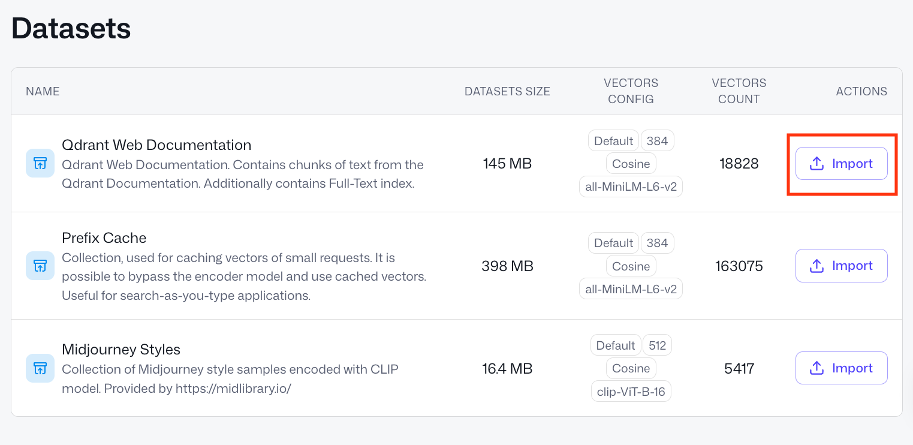
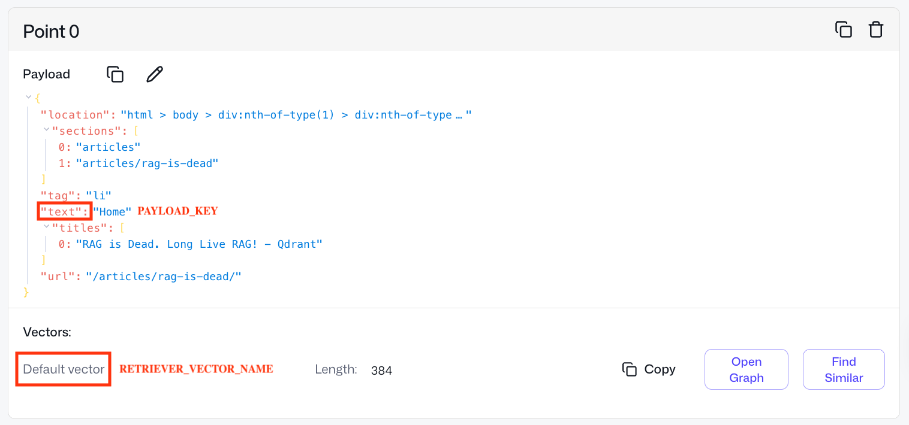

Relevance Feedback in Qdrant
| Time: 30 min | Level: Intermediate | Output: GitHub |
|---|
In Qdrant 1.17 we introduced a new Relevance Feedback Query, our scalable, first ever vector index-native approach to incorporating relevance feedback in retrieval.
In this tutorial, you’ll see how to:
- Customize Relevance Feedback Query for your Qdrant collection, retriever and feedback model.
- Add customized Relevance Feedback Query to your search pipeline.
- Evaluate the gains it brings to this pipeline.
Relevance Feedback
Relevance feedback distills signals about the relevance of current search results into the next retrieval iteration, surfacing better results over time.
The Relevance Feedback Query uses a small amount of model-generated feedback on the search results to guide the retriever through the entire vector space on the next retrieval iteration, nudging search toward more relevant results.
A detailed description of how it works can be found in the article Relevance Feedback in Qdrant.

Strategy
To use the feedback for guiding a retriever in the vector space, there are several possible strategies. For now, only the naive strategy is available – a simple 3-parameter formula which adjusts similarity scoring based on the feedback.
For the strategy to work well, the parameters of this naive formula should be customized for your data, retriever and feedback model.
For convenience, we provide you with a qdrant-relevance-feedback Python package that gives you the corresponding parameters for your use case.
This tutorial will demonstrate how to use it together with the Relevance Feedback Query API.
Customizing for Your Use Case
Setup
Install the aforementioned package (it will automatically install the Qdrant Client as its dependency):
pip install qdrant-relevance-feedback
We’re going to use a Qdrant Cloud Free Tier Cluster (make sure it’s on version 1.17.0+) and Free Embedding Inference available on this Free Tier Cluster.
Create a Qdrant Free Tier Cluster and initialize the Qdrant Client:
from qdrant_client import QdrantClient
client = QdrantClient(
url=<QDRANT_URL>,
api_key=<QDRANT_API_KEY>,
cloud_inference=True # to be able to use free embedding inference on Qdrant Cloud, for convenience & to reduce latency
)
Dataset
We’ll use one of the datasets available in the Qdrant Cluster UI.
- Go to Cluster UI -> Datasets.
- Out of 3 datasets there, pick the first one, “Qdrant Web Documentation”. It consists of small text chunks from our documentation website.
- Press the
Importbutton and type in a collection name –documentation.

After a couple of seconds you should see a green status pop up “Snapshot successfully imported” and a collection named documentation in the list of all collections.
Now we have a collection to work with and optimize semantic search in.
COLLECTION_NAME = "documentation"
Retriever
The retriever is an embedding model that converts your raw data into vectors for semantic similarity search. The Relevance Feedback Query will help you optimize your retriever’s ability to find relevant results in your data.
Our retriever is already defined by our collection – as the all-MiniLM-L6-v2 tag on the dataset’s “VECTORS CONFIG” shows us, vectors in the collection are produced with the all-MiniLM-L6-v2 model.
Let’s define it in our qdrant-relevance-feedback framework.
from qdrant_relevance_feedback.retriever import QdrantRetriever
retriever = QdrantRetriever("sentence-transformers/all-minilm-l6-v2")
QdrantRetriever supports all Qdrant Cloud Inference and FastEmbed models, and
all-MiniLM-L6-v2is covered by Qdrant Free Tier Cloud Inference. You can define and provide your custom retrievers, too.
Check what a point in this collection looks like.

Our documentation collection has only one vector per point – Default vector. However, in Qdrant, one can have several named vectors per point.
We need to provide the name of the vector associated with the retriever that we’re planning to optimize with feedback.
RETRIEVER_VECTOR_NAME = None # None if it's a default vector or your named vector handle in Qdrant's collection
We also need to point our framework to the raw data which is vectorized with our retriever model. Here, the raw data is the text field in the point’s payload. Simply put, we search on text snippets – in their vectorized form.
PAYLOAD_KEY = "text"
If your raw data is stored elsewhere outside of Qdrant, you can redefine the payload_retrieval part in qdrant-relevance-feedback.
Feedback Model
The feedback model looks at the results your retriever provides and scores how relevant they are. The retriever then uses this feedback, via the Relevance Feedback Query interface, to orient itself better in the vector space and surface more relevant documents.
As a provider of a feedback model in this tutorial, we’ll use Qdrant’s lightweight inference library called FastEmbed.
pip install fastembed
As all-MiniLM-L6-v2 is a small (only 384 dimensions) and weak model, we don’t have to pick a feedback model which is too strong or expensive. Such a small retriever won’t be receptive to sophisticated feedback anyway.
Hence, for simplicity, we can use a bi-encoder of a bigger dimensionality, for example, mxbai-embed-large-v1 of 1024 dimensions.
from qdrant_relevance_feedback.feedback import FastembedFeedback
feedback = FastembedFeedback("mixedbread-ai/mxbai-embed-large-v1")
This code will download mxbai-embed-large-v1 for local inference.
We provide FastembedFeedback with all the FastEmbed models. However, you can define and provide your custom feedback model, too. It can be anything: bi-encoder, late interaction model, cross-encoder or LLM.
Plugging in Collection, Retriever and Feedback Model
Now we have everything in place: retriever, collection, feedback model.
from qdrant_relevance_feedback import RelevanceFeedback
relevance_feedback = RelevanceFeedback(
retriever=retriever,
feedback=feedback,
client=client,
collection_name=COLLECTION_NAME,
vector_name=RETRIEVER_VECTOR_NAME,
payload_key=PAYLOAD_KEY
)
We can run a small training process, which will collect data and adjust the Relevance Feedback Query parameters (naive strategy) for this triplet.
Training
Training Data
How well the relevance feedback formula fits your data depends on the amount and quality of the training data (how realistic it is for your use case).
In general, we need a very little amount of it (50-300 queries will suffice), as we only need to train 3 parameters.
We’ve generated 50 queries with Claude Code, using the prompt “Generate 50 short search queries (3-10 words each) that a developer might type when browsing Qdrant’s website.”.
Training queries
train_queries = [
"qdrant filtering nested object payload",
"vector database for fraud detection",
"qdrant golang client example",
"sparse dense fusion ranking qdrant",
"qdrant write ahead log explained",
"sentence transformers qdrant integration",
"qdrant ef_construct m parameter tuning",
"music recommendation engine vector search",
"qdrant on kubernetes helm chart",
"qdrant payload index types keyword integer",
"qdrant segment optimizer internals",
"content moderation with embeddings",
"qdrant point struct fields",
"zero shot classification vector database",
"qdrant telemetry prometheus grafana",
"document deduplication vector similarity",
"qdrant replication factor setup",
"llama index qdrant integration",
"qdrant single node vs distributed",
"news article clustering embeddings",
"qdrant read consistency levels",
"face recognition vector search",
"qdrant timeout configuration tuning",
"langchain qdrant vector store",
"qdrant exact search brute force",
"job matching semantic search qdrant",
"qdrant shard transfer rebalancing",
"openai embeddings qdrant tutorial",
"qdrant versioning API changelog",
"patent search vector database use case",
"qdrant cohere embeddings example",
"customer support ticket routing qdrant",
"qdrant memory mapped files",
"multilingual search qdrant embeddings",
"qdrant indexing speed optimization",
"code search semantic embeddings qdrant",
"qdrant terraform cloud infrastructure",
"reducing hallucinations LLM qdrant grounding",
"qdrant aws deployment guide",
"long document search chunking qdrant",
"qdrant community discord forum",
"e-learning personalization vector search",
"qdrant concurrent requests handling",
"graph neural networks vector store",
"qdrant enterprise security features",
"product catalog search qdrant retail",
"qdrant contributing open source guide",
"time series anomaly vector embeddings",
"qdrant gRPC vs REST performance",
"qdrant vector search instagram feed ranking",
]
Another parameter controlling training data size is how many responses we retrieve from our collection per each query.
TRAIN_LIMIT = 25
The bigger the TRAIN_LIMIT, the more training data our formula gets, but the more expensive and slow the training becomes.
For training, we need our feedback model to provide ground-truth relevance scores, so it rescores #queries * TRAIN_LIMIT, here 50 * 25 = 1250 query-document pairs. Adjust based on your training budget.
Training Process
Now we can run the training:
formula_params = relevance_feedback.train(
queries=train_queries,
limit=TRAIN_LIMIT,
)
You’ll see a “Building training data” process running on 50 queries. Additionally, the framework will provide you with a sanity check, something like:
On 22.00% of training queries the feedback model strongly disagreed with the retriever model.
If the feedback model agrees with your retriever in all cases (if percentage is 0.00), there is little point in using the chosen setup for relevance feedback-based retrieval, consider changing the setup.
Then after a blazingly fast training, you’ll get your parameters, something like:
Naive formula params: a=0.240764, b=1.348897, c=0.590883
These are the parameters customized to our documentation collection, all-MiniLM-L6-v2 retriever and mxbai-embed-large-v1 feedback model.
Now we can use them for relevance feedback-based retrieval with any client of your choice.
Adding Relevance Feedback Query to a Search Pipeline
Let’s see how introducing the Relevance Feedback Query to a retrieval pipeline could work on this use case.
Reason: Let’s say you’re powering documentation search with all-MiniLM-L6-v2, as it’s very cheap and fast, but often it doesn’t provide relevant enough results and you know there are more relevant parts of documentation than what all-MiniLM-L6-v2 gets you.
For example, let’s look at this query:
query = "recommendations API how to use"
1. Vanilla Initial Retrieval
We run simple semantic similarity search with our retriever, as we’d normally do in our search application.
query_embedding = retriever.embed_query(query)
CONTEXT_LIMIT = 3
responses = client.query_points(
collection_name=COLLECTION_NAME,
query=query_embedding,
with_payload=True,
with_vectors=True,
limit=CONTEXT_LIMIT,
using=RETRIEVER_VECTOR_NAME,
).points
Let’s see what results we get:
responses_raw = [r.payload[PAYLOAD_KEY] for r in responses]
print("\n--- Initial Retrieval Results ---")
for i, text in enumerate(responses_raw, 1):
print(f" [{i}] {text[:200]}")
print()
We’ll get something like:
--- Initial Retrieval Results ---
[1] Recommendation API
[2] recommendation API.
[3] So, even when the API is not called recommend, recommendation systems can also use this approach and adapt it for their specific use-cases.
We’re seeing duplicates as our collection consists of chunks from our documentation website and some text is identical across different sections.
Works, but perhaps there’s something else in our collection that would answer the query better – the retriever is just too weak to pick it up.
2. Getting Feedback on Initial Retrieval
Now we get feedback from our mxbai-embed-large-v1 feedback model on the top 3 results for the query “recommendations API how to use”.
The feedback model rescores them according to its own judgment of semantic similarity. We only show it a small number of results (CONTEXT_LIMIT = 3) to keep the pipeline fast and cheap.
feedback_model_scores = feedback.score(query, responses_raw)
3. Relevance Feedback-based Retrieval
Now we can strengthen our all-MiniLM-L6-v2 retriever with the given feedback on 3 initial retrieved responses.
We provide the feedback as a list of (example, score) pairs. Under the hood, this uses the mechanism of context pairs mining described in the article.
from qdrant_client import models
responses_point_ids = [p.id for p in responses] # CONTEXT_LIMIT responses from initial vanilla retrieval (their point IDs)
#responses_vectors = [p.vector for p in responses]
relevance_feedback_responses = client.query_points(
collection_name=COLLECTION_NAME,
query=models.RelevanceFeedbackQuery(
relevance_feedback=models.RelevanceFeedbackInput(
target=query_embedding,
feedback=[
models.FeedbackItem(example=example, score=score)
for example, score in zip(responses_point_ids, feedback_model_scores) # or zip(responses_vectors, feedback_model_scores)
],
strategy=models.NaiveFeedbackStrategy(
naive=models.NaiveFeedbackStrategyParams(**formula_params) # our parameters from above
),
)
),
with_payload=True,
limit=3,
using=RETRIEVER_VECTOR_NAME,
).points
Let’s see what relevance feedback-based retrieval brings to the table:
relevance_feedback_responses_raw = [r.payload[PAYLOAD_KEY] for r in relevance_feedback_responses]
print("\n--- Additional Results from Relevance Feedback-based Retrieval ---")
for i, text in enumerate(relevance_feedback_responses_raw, 1):
print(f" [{i}] {text[:200]}")
print()
It should return something like this:
--- Additional Results from Relevance Feedback-based Retrieval ---
[1] Recap of the old recommendations API
[2] The result of this API contains one array per recommendation requests.
[3] Deliver Better Recommendations with Qdrant's new API
4. Combining all the Steps
Now you can use Relevance Feedback Query results in different ways:
- Combine with initial retrieval, for example, rerank the union of both result sets with the feedback model.
- Use as your main results, aka rely on the Relevance Feedback Query as the primary source of search results.
Approach is tied to what you’re passing to the example field in FeedbackItem (or analogues in other clients): raw retriever-produced embeddings or point IDs from your collection.
If you’re passing point IDs as
examples, these points are automatically excluded from the results. To include them among other points, pass the raw vectors (see commentedresponses_vectors) instead of point IDs.
Evaluation
Empirically, Relevance Feedback Query results on the query above looked relevant. Yet we can imagine that might not be enough to justify adding additional complexity to your pipeline.
The framework we released also provides an evaluation block.
Analogously, we’ve generated a test set of queries.
Test queries
test_queries = [
"how to install qdrant locally",
"qdrant vector similarity search",
"qdrant HNSW filtering vs pre-filtering performance",
"qdrant payload filtering and indexing",
"qdrant docker setup",
"cosine similarity vs dot product qdrant",
"qdrant REST API authentication",
"batch upsert vectors qdrant",
"qdrant cloud deployment",
"scalar quantization qdrant",
"qdrant internals storage engine blog post",
"delete points by filter qdrant",
"qdrant named vectors",
"sparse vectors qdrant",
"qdrant scroll points pagination",
"what is a vector database",
"qdrant vs pinecone comparison",
"semantic search tutorial qdrant",
"RAG pipeline with qdrant",
"recommendations API how to use",
"qdrant use cases e-commerce sparse vectors",
"multimodal search images text qdrant",
"qdrant performance benchmarks",
"how vector search works explained",
"qdrant hybrid search blog",
"building chatbot with qdrant",
"qdrant new features release",
"neural search vs keyword search",
"qdrant fastembed integration tutorial",
"anomaly detection vector database",
"qdrant customer success story",
"LLM memory storage qdrant",
"qdrant product quantization explained",
"qdrant scalar vs product quantization comparison",
"qdrant binary quantization blog post",
"chunking strategies for RAG qdrant blog",
"qdrant JavaScript TypeScript SDK",
"real time vector search qdrant",
"qdrant rust performance internals",
"open source vector database comparison",
"qdrant snapshot backup restore",
"image search with qdrant clip",
"qdrant geo filtering use case",
"drug discovery vector search qdrant",
"qdrant multitenant architecture",
"on premise vs cloud vector database",
"qdrant web UI dashboard",
"qdrant funding news announcement",
"fine tuning embeddings qdrant",
"getting started vector search beginner",
]
Now let’s run our evaluation on this test set, and see how much gain we get, considering that our feedback model receives CONTEXT_LIMIT results per query to provide feedback on.
from qdrant_relevance_feedback.evaluate import Evaluator
N = 10 # as in metric@N
evaluator = Evaluator(relevance_feedback=relevance_feedback)
results = evaluator.evaluate_queries(
at_n=N,
formula_params=formula_params, # from above
eval_queries=test_queries,
eval_context_limit=CONTEXT_LIMIT # from above
)
We’ll get output looking like this, providing us with relative results relevance gain and discounted cumulative gain (DCG) win rates at N (here, 10).
On the 2nd retrieval iteration, over this test set:
Relevance feedback retrieval surfaced 44 more relevant results (according to the feedback model)
Vanilla retrieval surfaced 39 more relevant results (according to the feedback model)
Relative results relevance gain over this test set is: 12.82051282051282%
DCG win rates (which approach ranks results better):
Vanilla retrieval: 38.0% wins
Relevance feedback retrieval: 48.0% wins
Ties: 14.0%
Relative results relevance gain: over this test set of 50 generated queries, relevance feedback-based retrieval pulled 5 (44 - 39) more relevant documents from the collection, which the retriever was unable to “notice” – a 13% boost over vanilla retrieval.
DCG win rate: on ~half of the queries (48%), relevance feedback-based retrieval ranks results within the evaluation window N better than the retriever would. In 14% of queries, both methods are identical, and in 38% relevance feedback confuses the retriever.
A detailed explanation of the metrics is in the article, including accompanying visualizations.
Conclusion
In this tutorial, we demonstrated how to use relevance feedback on text data to increase the relevance of results in your retrieval pipelines. Here’s what to keep in mind:
- Adaptable to your data – works on different modalities, not only text. You can do the same with images, for example.
- Flexible model choice – you can use predefined retrievers and feedback models we support in Cloud Inference and FastEmbed, or define your own, anything, including LLMs and custom LTR models.
- Built-in evaluation – with our framework, you can also evaluate the potential gains of using the Relevance Feedback Query before putting it into production.
If you’d like advice on Relevance Feedback Query usage or have ideas on how to enhance the method, reach out in our Discord community.